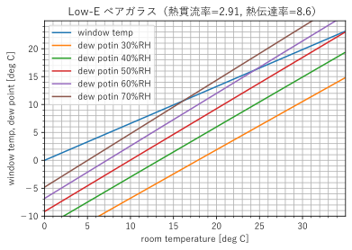
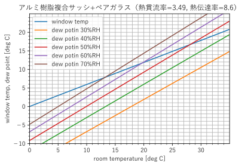
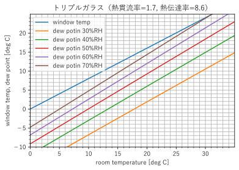
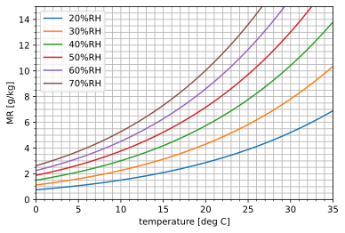

新築戸建の建て方¶
始めに¶
家を建てる時に考えた内容をざっくりとまとめてみた。何かの参考になれば。なお考えた全てに対応した家を建てたわけではない模様。
住宅に何を選ぶか¶
引っ越しや結婚等を機に住宅を選ぶとき、いろいろな選択肢がある。ここではそれぞれのメリットデメリットをまとめてみた。
- 賃貸
- メリット
- リスクが最も小さい
- 転勤、転職、家族構成の変更に対して柔軟に対応できる
- 収入に変化があった場合も対応が簡単
- 天災等のリスクを考える必要がほとんどない
- トータルコストは低くなる傾向にある
- リスクが最も小さい
- デメリット
- 性能が低い
- 昔から一時住まいの意味合いが強く。性能は最低限のものがほとんど。断熱、防音、換気などは期待できない。
- 性能が低い
- メリット
- 中古マンション
- メリット
- 立地が良い物件が多い
- コストメリットが大きい。新築に比べて価格が一気に低下する。
- 鉄筋コンクリートは高寿命なので適切なメンテナンスさえすれば、
- 性能も新築に比べるとほとんど変わらない。
- 固定資産税が戸建てに比べると安い傾向
- もし引っ越しが必要になった場合、売買や賃貸に出しやすい
- デメリット
- 修繕積立金が適切か確認する必要がある
- 住人が少ないマンションは安価だが、積立金がなく将来多額の資金が必要になる可能性がある。
- メリット
- 新築マンション
- メリット
- 立地が良い物件が多い
- 固定資産税が戸建てに比べると安い傾向
- もし引っ越しが必要になった場合、売買や賃貸に出しやすい
- デメリット
- 募集時は修繕積立金が低く見積もられていて、後年高くなるケースが多い
- 中古とそんなに性能変わらないのに高い
- メリット
- 中古戸建
- メリット
- 安い。マンション以上に価格の下落が大きい。ただし寿命をしっかり考慮する必要がある。
- デメリット
- 昔のものは省エネ基準や耐震性基準も緩いので性能が低いものが多い
- おそらく大々的なリフォームが必要
- メリット
- 新築戸建て
- メリット
- 必要な性能を担保できる
- 自分の家という謎の安心感
- デメリット
- 最も高コスト
- 駅近など、便利な場所に建てるのは難しい
- 固定資産税が高い
- 引っ越しが一番大きなリスク
- メリット
ざっとまとめると
- 建物の性能
- 賃貸 < 中古戸建 < 中古マンション < 新築マンション < 新築戸建て
- コスト
- 賃貸 < 中古マンション < 中古戸建 < 新築マンション < 新築戸建て
それなりの性能の家で健康的に過ごしたいので新築戸建てを選択したので、選び方などをまとめていく。なおリスクやコストは最も不利なので、よくよく考えよう。
土地¶
もっとも重要なのは土地選び。家は資産にならず負債になるが、土地は資産と考えてもいいと思う。資産を購入すると考えた場合、将来値下がりすると予想されるものを購入するのはあり得ない。
都市部か郊外、どちらが良いかは悩むところ。将来的には総人口は減り、都市部への人口集中が進むと予測されている。最もいいのは将来都市化される郊外だが、将来どうなるかなんて誰にも分からない。個人的には通勤/通学を考えておおよその場所を決めて良いと思う。移動時間に時間を使うほど無駄なことはない。共働きの場合、両者の通勤時間が最小化されて便利な場所が良いのではないだろうか。通勤時間は30分以内がベストで長くても1時間以内にしよう。通勤手段は徒歩か自転車がベスト。立っているだけ、座っているだけの暇な時間はストレスにつながることが証明されている。
ちなみに子供の学区で選ぶのは通常NG。数年後はどうなるか分からないし、数年間の為だけに何十年も住む場所を決めてしまうのはデメリットが大きすぎる。気になるなら私立に行く方が良いだろう。ただ一般的に治安が悪いと言われる場所はやめておこう。近所付き合いは重要だし、朱に交われば赤くなる。
選ぶ時の注意点だが不動産屋で土地を紹介されてもなかなかいい場所かどうかは判断出来ない。少なくとも下記については確認しておこう。ただし神経質になりすぎないこと。通常、100点を目指すと購入できない。80点なら即買いくらいのイメージ。長く探しても意味がないので、長くても2, 3か月でケリをつけるのをお勧め。長くてもいいのが出るとは限らないし、疲れるだけ。
確認ポイント
- 通勤/通学に問題ないか
- スーパーやドラッグストアの普段の買い物は便利にできるか
- 周辺を歩いてみよう
- 道は清潔か
- ゴミ出しの日にゴミの様子を見てみよう。＝周辺住人の民度
- ハザードマップを確認しよう
- リスク0を目指す必要はない。許容できるリスクかどうかを確認する
- 国の資料ともしかすると市も独自にだしているかもしれないのでWebを確認する
資金計画¶
多くの場合、土地を買ってそこに家を建てることになるが、先述したように家は負債だが、土地は資産になる。予算オーバーしそうで家か土地かどちらかを優先しなければならない場合は土地のウェイトを大きくしよう。また両親から援助が貰えるなら遠慮せずに受け取っておこう。
なお住宅会社でファイナンシャルプランナーを紹介されるが、たいていは役に立たない。返済できるギリギリまでローンを推奨されるか、保険を売りつけられるだけ。本当に気にするなら有料サービスを受けよう。あるいはそんなに難しくないので資格の本買って、自分で勉強した方がいい。後々役に立つ。（返済計画も自分で考えられないならカモになるだけ。。。）
土地と家以外にもお金が必要なことを理解しておこう。修繕費と固定資産税は見落としがち。月々の負担は修繕費+固定資産税で+2～3万程度みておくこと。
多くの人が住宅ローンを利用することになるだろう。しかし金利だけで見るとこんなに低金利で借りれる借金はない。個人的には可能な限りローンにするのが良いと考える。間違っても頭金を大きくして、自動車やスマホをローンで購入するようなことはないように。金利 < 住宅ローン控除になるだろうし、頭金にするお金は投資などに回した方が有利になると思う。20年以上借りるならまず間違いなく適切なインデックスファンドの方がリターンは大きくなる。もちろんリスクはあるので許容できるか判断しよう。なおローンのボーナス返済はNG。ボーナスはゼロで残業代がほとんどなくなっても生活が破綻しないように設計すること。ちなみに2019年に調べた限りではローン会社のおすすめは「SBI」「りそな」「三井住友信託？」。金利が最も安い銀行で借りるのがベスト。間違っても付き合いで決めないように。ネット銀行では金利に連動する指数が明示されていないものもあるので注意。変動金利なら短期プライムレートに連動しているかどうか。変動か固定か、どちらが良いかの答えはない。金利の変動リスクを個人が持つか、銀行が持つかの差。損得は分からないので、どちらが自分自身を納得させられるかで決めてしまってよいだろう。ただし仕組みはよくよく理解しておくこと。個人的には金利が低かったので変動で出来るだけ借りて、余裕資金を作り金利が上がってきたらある程度一括返済する戦術を採用。ローンに付随する保険についても説明する。通常、団信は必須で他は不要だろう。3大疾病で返済免除等もあり、一見お徳のように見えるがリスクが低い若い時のリターンが大きく、リスクが高い時のリターンが小さくなっていて保険の意味がない。
どうしても住宅ローンは一番大きな固定費になると思う。出来るだけ、他の固定費は小さくなるように色々と見直そう。死亡保険、医療保険、自動車保険、携帯代は必ず見直しておこう。特に保険は人生で二番目に大きな買い物と言われているので、よくよく見直そう。基本的に、何かあったとき金銭的に破綻するのを防ぐ為に保険を活用しよう。心配だから入るってのはNG。特に団信に入ってたら死亡保険は不要になる可能性もある。後は節税も可能な限りやるように。ふるさと納税や積立NISAをやっていないなら家を買う前にやることがあるように思う。間違っても最低限必要な食費や娯楽費は削らないように。効果が小さい上に生活水準に大きく影響する。ここまでする必要あるなら家は買ってはいけない。それなりの収入と貯蓄があるなら、次のような選択がもっともリーズナブルに思う。
- 死亡保険
独身や共働きで子供がいなければ不要。独身なら誰もお金で困らないし、配偶者が働いているなら頑張ってもらおう。ただ子供がいると必要になる可能性が高い。子供が就職するまでにもしもがあった時のリスクヘッジとするのがいい。なお子供がいれば公的資金も注入される。もしもの場合の補助で足りない分だけを保険で足しにすること。計算もしないで適当に入るのはNG。子供が出来たときに10年の定期保険に入るのがいいように思う。さらに10年後にもう一度入れば合計20年なので後は頑張ってもらおう。なお保険会社はどこでもいいのでネットで一番安いの探すのがいい。医療保険は保険がおりやすい、おりにくいがあるが、死亡保険は一目瞭然なので差が出ない。 - 医療保険
貯蓄があれば不要。毎月健康保険に何万円も払っている。貯蓄がない場合は貯蓄が出来るまでの期間の掛け捨てでいい。というか貯蓄がなければ家を建てるな。保険診療をする限り最悪でも月10万+入院時の個室代くらいに落ち着く。近年は入院期間も非常に短いので、ほとんどメリットはないと思う。かなり余裕を見て、一年無収入で治療に専念できるだけの貯蓄があれば十分だろう。共働きならなおさら。まだ若く、貯蓄がないならもしもの時は両親から援助が受けれないか相談しておこう。もしものときに援助が受けれる程度の余裕が両親にあるのであれば、自分自身でリスクヘッジする必要はない。よくある間違いが、入院する必要があるほどの病気になったとき、治療費/入院費を保険で賄おうとするor儲けようとする考え方。生活が破綻しない程度の費用であれば、そのリスクは背負った方がいい。保険は期待値を考えると1以上になることは絶対ないしね。 - 自動車保険
ネット保険でいいが、必ず入ること。ただ会社によって対応の良し悪しはあるように思う。「対人対物無制限+弁護士特約」さえあればとりあえず安心できる。自転車に乗るなら、自動車保険の特約で付けるのがおそらく最安値。 - 携帯電話
3大キャリアで契約しているなら、本当に必要か見直しておこう。ほとんどの人は不要だろう。サブブランドか格安SIMにしとけ。 - 光熱費
ガス/電気は見直し必須。少しでも安いところを選択しよう。別に停電がおきやすくなるわけではない。
なお住宅の火災保険は必須。必ず入っておこう。家にもしもがあったら、ローン+賃貸となって生活が破綻するだろう。（お金持ちなら不要だけどね）
家の性能¶
賃貸は家の性能が低いといったが、性能とはなんだろう。基本的には健康に影響を及ぼすような項目のことを言っている。家での生活で健康に影響を与えるのは、「温度」「湿度」「二酸化炭素濃度」「アレルゲン」が多くを占める。
- 温度
凍死や熱中症は多くない。最も危険なのは冬場のヒートショック。かなりの死亡例があるので、冬場の室温を一定に保つことが非常に大切。また低温で長期間過ごすことにより、高血圧のリスクが高まる。ヒートショックや高血圧のリスクを小さくする為に家中20℃以上に保つことが望ましい。 - 湿度
低ければウイルス増殖や喉の痛みの原因。高ければ不快感やカビの原因になる。40～60%でコントロールすることが重要。できれば相対湿度ではなく絶対湿度で管理しよう。 - 二酸化炭素
適切に換気できることが重要。気密性が高い住宅で換気しないことは健康に悪影響。特にマンションで冬場に寒いからと換気しないのはNG。 - アレルゲン
家の中に侵入、存在するアレルゲンとして「花粉」「ダニ」「カビ」「ハウスダスト」が多くを占める。花粉は部屋内に侵入させないように、ダニ、カビ、ハウスダストは発生させないよにすることが重要。花粉は換気のとき、高性能フィルターを使うことで解決。ダニ、カビは湿度を適切に保つことで発生を抑制。ハウスダストはこまめに掃除することで解決する。
以上のような健康に影響する項目に対しては対策を検討しておこう。
なお賃貸・中古戸建は上記について何も対策されていないと考えて良いと思う。もし中古戸建をリフォームする場合は、上記対策を最優先させること。見た目は二の次。なおマンションの場合は、周りを部屋に囲まれているので温度は非常にコントロールしやすいので大きなメリットとなる。しかし多くの場合、換気性能が不十分。換気扇のようなものがついていることがほとんどだが、冬場/夏場も止めずに動かし続けることが重要。寒さ暑さ電気代が原因で止めるのであれば、換気できなくなり健康に影響する。
家を建てる¶
家を建てる時の注意点を見ていくことにする。
どこで建てるか¶
家を建てようと考えると、どこで建てるか迷うだろう。大手メーカーから地元密着の工務店まで色々ある。大手メーカーは高くて、地元の工務店は安くなる傾向がある。ただし地元の工務店でも特色ある工務店はいいお値段。
後述するが、上で述べた家の性能を確保するには「断熱」「気密」「換気」が重要になってくる。最もいいのは自分でもよく勉強した上で、上の3つを得意とする工務店に依頼することだろう。もし勉強する気がなくてお金があるなら、大手に依頼するのがいい。びっくりするほどの失敗はしない可能性が上がる。ただしそれなりの性能を確保できる大手工務店は2社くらい。
ところで家は大きく鉄筋コンクリートか木造かで分類される。もちろんそれぞれにメリット・デメリットがあるが通常木造の方がメリットが大きい。鉄筋コンクリートの最大のメリットは大空間を取れることや設計の自由度が上がることだ。大豪邸なら大きなメリットになるかもしれないが、一般宅ではメリットにならないだろう。ちなみに一番のデメリットは断熱性の低さ。コンクリートを木材の熱伝導率の違いを見てみるといい。メーカーは断熱材を入れるからも問題ないというが、同一の断熱性能を確保しようとすると、木造に比べてはるかに壁が分厚くなることは容易に想像できる。なお実際には同じ程度の厚さなので断熱性は低くなっている。変わって木造の最大のデメリットはシロアリ。適切に侵入を阻む仕組みを作っておかないと、家がやられる。火災や地震に対しては両方とも十分な性能を発揮する。特に気にする必要なないだろう。ちなみに価格は木造の方が相対的に安価。
家のサイズとコスト¶
どのくらいのサイズとお値段の家を買ったらいいのだろうか。必要以上に大きな家は土地も必要になるし、建築費も高くなる。あくまで都市部に建てた私の意見だが、サイズは100m^2あれば十分すぎる。これは高級マンションに匹敵する大きさ。コストは周辺の賃貸の価格を参考にするのがいい。賃貸と大きく違わなければ、もし引っ越しなどがあっても、賃貸に出せる可能性がある。今なら土地を除いて2000万くらいかな。2000万、35年ローンで金利が1%なら月々56457円。固定資産税や修繕積立考えて月8万くらい。なお大手でもローコスト住宅なら余裕だが、後述する性能は担保できないのでおすすめしない。
性能の確保¶
できれば健康のためにも最低限の性能を確保しておきたい。なおやればやるほど高くなるので何事もやりすぎ注意である。
断熱性¶
日本では断熱性の必須スペックはないが、諸外国（先進国）では当たり前のようにある。これはもしかすると寒い国が多いという理由もあるかもしれないが。。。ちなみに2020年からは最低基準が設けられる予定だったが、達成できない工務店が数多くあるという理由から実施が延長された。ちなみにこの最低基準も非常に低いものになっている。
それではどの程度の断熱性を有していれば良いのだろうか。この断熱性はUA値[W/(m^2*K)]と呼ばれる数値で表される。単位を見て分かるように建物内外で1℃の温度差があったときに損失する熱量を面積で割ったものだ。これは単位面積当たりの熱損失と言ってもいいだろう。なおここから分かるように、建物平均の性能を表している。後述するが一部に断熱性が低い箇所があると家としては台無しなので、平均的にスペックを上げていき結果的にUA値をある値以上にする必要がある。
さてこのUA値にはどのような基準があるのだろうか。以下に日本の基準を示す。今後2021年以上に必達となるものが省エネ基準断熱等級4である。ずいぶん改善されるように見えるが、多くの工務店が未だ対応できないのが現状なので注意が必要になる。
| 地区 | 北海道 | 青森、岩手など | 東北、長野など | 関東～九州北部 | 宮崎、鹿児島 |
|---|---|---|---|---|---|
| 断熱等級3 | 0.54 | 1.04 | 1.25 | 1.54 | 1.54 |
| 省エネ基準断熱等級4 | 0.46 | 0.56 | 0.75 | 0.87 | 0.87 |
| ZEH | 0.4 | 0.5 | 0.6 | 0.6 | 0.6 |
| HEAT20 G1 | 0.34 | 0.38 | 0.46 | 0.48 | 0.56 |
| HEAT20 G2 | 0.28 | 0.28 | 0.34 | 0.34 | 0.46 |
| HEAT20 G3 | 0.2 | 0.20 | 0.23 | 0.23 | 0.26 |
ではどの程度の値にするべきか考えることにする。ぶっちゃけた話、温度の問題ならエアコンをガンガンに使うと寒さ暑さに対応できる。とは言っても電気代が高すぎるとケチって使わないので健康を損なうだろう。ということはそこそこの電気代で対応できるくらいの断熱性にすればよい。具体的にはZEH基準は最低限満足したい。これはZero Energy Houseの略で太陽光等を使えば年間のトータルエネルギーが大体ゼロに出来ると期待される性能だ。これくらいなら電気代も許容できそうだ。もう少し健康にも考慮して考えてみよう。先ほど平均的に性能を上げるのが重要と記載したが、これの理由を見ていく。極論をいうと極厚の壁とうっすい窓でもUA値は満足するが、窓付近は寒いし熱くなってしまう。何より窓が結露してカビの原因になるだろう。ということで、熱の出入りが一番大きいといわれる窓の断熱性が重要になってくる。少なくとも結露するのはどう考えてもダメだ。ということはアルミを使っているようなものは全滅するはず。少なくともオール樹脂のサッシを採用しよう。いわゆる複合サッシは結露するので採用すべきでない。これに合わせるようなガラスだとそんなにおかしいものはないと思う。アルゴンガスが入ったLow-Eペアガラス以上ならOKだろう。 念のため、真冬の室外温度と室内の温度/湿度から結露しないかどうかを計算しておくといい。氷点下になるようなところだと、もう少しスペック上げてもいいかもしれない。なお玄関も結露しやすいので見た目だけでなくスペックも気にして選択しよう。
上記のようなものを守るとZEH～HEAT20 G1くらいになるはず。
窓の選び方¶
先述したように家の熱損失のほとんどは窓で発生すると言われている。経験的にも窓が結露することが多いので納得できる事実だと思う。それではどのような窓を選択すれば良いのだろうか。結論から言えば総樹脂製でガス注入タイプのLow-Eペアガラス以上を選択するべきだ。多くのメーカーではアルミと樹脂の複合サッシを採用しているので注意しよう。それではその根拠を確認していこう。方針は冬に室内を温めて適切な湿度に設定したときに、結露しないことだ。結露しないかどうかを計算するので、室温、湿度、外気温を設定し、窓のスペックを代入して計算する。今回はAGCのサイトから窓のスペックを拝借した。 https://www.asahiglassplaza.net/catalogue/sougou_gijutsu/00042.pdf
家を建てる場所の外気温を気象庁のデータから入手しよう。今回はだいたい0℃とする。冬の室温は20～22℃が推奨されるので高めの22℃と設定し、湿度も高めの60%とする。それでは計算していこう。まず窓の表面温度を求める。 窓の表面温度は外気温、室温、熱貫流率、熱伝導率から計算できる。熱伝導率はガラスに一般的に使われる数値8.6を採用し、熱貫流率は先のサイトから拾ってくる。プラスチック製の建具とガス入りLow-Eペアガラスでは熱貫流率は2.91となっている。表面温度は室温-熱貫流率/熱伝達率*(室温-外気温)で計算できるので、これらの数値を入れると表面温度は14.5℃となる。次は22℃60%における露点を計算し、表面温度が露点以下になっていないことが確認できればOKとなる。 近似式(-20～50℃)となるが、計算してみる。計算式に出てくる定数はA=6.116441、m=7.591386、Tn=240.7263である。なお室外の熱伝達率は通常大きい(20.4)ので今回は外気温＝外側のガラス温度とした。飽和水蒸気圧P_{ws}は
となり、露点Tdは
で計算できる。これらに代入すると露点は13.8℃となる。ギリギリだが表面温度以下なのでこの条件では結露しないことが確認できた。温度を下げたり、湿度を下げると問題ない気もするし、0℃まで寒くなる日は少ないのでこれで良しとしようか。寒さが厳しかったり、もっと室温を上げるような場合はもう少し高級な窓を選択してもいいかもしれない。
ちなみに1グレード落としたアルミ+樹脂の複合サッシを使用した場合の熱貫流率3.49となる。これで計算すると窓表面温度は13.0℃となって結露が発生することが確認できる。ちなみにトリプルガラスだと熱貫流率は1.7くらい。この条件だと表面温度は17.6℃なので、ちょっと余裕が出てきます。
それぞれのグラフを記載しておく。   
気密性¶
気密性はその名の通り、家にどれだけ隙間があるかを示すもの。指標としてC値が使われている。C値は単位床面積(m^2)あたりの隙間(cm^2)。つまり小さければ隙間が少ないということですね。昔の家は正直スッカスカ。スッカスカだとせっかくの断熱性が生かせないし、花粉などのアレルゲンも侵入してくる。これは設計もそうだけど、施工の精度も重要になってくる。高気密を唄うだけなら誰でもいえるので、しっかりと気密測定して、数値保証があるメーカーで建てるのがいいと思う。一般的には鉄筋コンクリートのマンションでC値=2.0だが、新しく建てるなら0.7くらい欲しいかな。気密性がないと計画的な換気が難しくなる。ちなみに年々隙間は大きくなって0.5くらいは大きくなるのが一般的。C値=0.7なら100m^2くらいの家ではがき半分くらいの面積の隙間がある計算。
換気¶
新築の家には換気システムの搭載が義務付けられている。その換気システムは大きく第一種換気と第三種換気に分けられる。第一種換気は熱交換して換気するシステムで第三種換気は熱交換しないシステム（換気扇みたなもの）となる。法律では最低2時間に一回は空気が全て入れ替わる必要がある。イメージできるように第三種換気ではせっかくの断熱性を生かすことが出来ないシステム。昔の家のようにスカスカのイメージかな。かといって換気を止めるのは二酸化炭素濃度の上昇を招くので愚策です。したがってベストは第一種換気です。
ただこの換気システムの選択が難しい。イメージできるように熱交換機は効率が重要なファクタになり、これは全熱交換器で80%以上あれば十分だろう。これだけなら選択は簡単ですが、効率以上に重要なのがメンテナンス性になる。空気を出し入れするシステムなので、ここがカビたり汚れたら目も当てられない。排気のところは汚れても大丈夫だが、吸気（部屋に送る空気）が汚れたら何のためのシステムか分からない。ベストはダクト排気型でしょうか。各部屋に送る吸気ダクトはなく、排気の為のダクトだけがあるイメージ。これならダクトが汚れても問題なし。ただこのシステムの場合、各部屋に送る吸気ダクトがないのでエアフローをよくよく検討する必要がある。次点でダクト吸気型。空気をダクトで各部屋に送るシステムです。もちろん空気を送るダクトは汚れることになりますが、高性能なフィルタを置くことで対応する。この場合、各部屋へのエアフローは強制的に確保されるが、ダクト汚れのリスクを背負うことになる。ただ24時間動かしているので、カビ等のリスクは低いと考えて良いと思う。またPM2.5対応のフィルタを挿入しておくとまぁまぁ大丈夫な気がするが。。。
なお気を付けたいのでこれらのフィルタの交換が難しいもの。中には屋根裏や床下に配置するシステムもあるようですが、まず間違いなくフィルタを交換しなくなるので絶対避けなければなりません。また外の吸気口から熱交換器のフィルタまでの距離が短いものがいいかな。少しでも汚れを防ぎます。
室温と湿度¶
これまでも室温と湿度は冬場は20℃～22℃、湿度は40～60%がいいと言ったが根拠を確認しておく。夏場は快適性（作業効率）、冬場は健康リスクを焦点とする。 色々な研究があるが夏場は20～25℃ではあまり作業効率は変わらないが、25℃～32℃の間では1℃上がることに約2%作業効率が低下すると言われている。個人差は大きいが、それなりに納得できそうな数字ではある。25～28℃くらいの間で自分が快適と思う温度に設定して良いと思う。寝室は布団を被らないといけないくらいの温度が最も快適と言われている。あまり室温を上げすぎないように気を付けよう。ちなみに私は26℃～27℃に設定にしている。 https://ondankataisaku.env.go.jp/coolchoice/coolbiz/article/action_detail_004.html
冬場の室温は命に係わるので夏より重要だ。冬場の室温、夏場の室温の差が大きいと「高血圧」「コレステロール」「心電図異常」に悪影響があることが分かっている。ここから最低でも18℃以上に設定しよう。ちなみにイギリスにおける最低室温は21℃。 https://www.mlit.go.jp/report/press/house07_hh_000198.html
湿度に関しても考える。湿度はカビ、ダニ、ウイルスの増殖を抑え、喉の渇きを感じにくいラインをターゲットとする。カビ、ダニは相対湿度が重要で、ウイルスや喉の渇きは絶対湿度が重要だと言われている。まとめると、 カビ：80%以下 ダニ：60%以下 インフルエンザウイルス：11g/kg以下で増殖が始まり、7g/kg以下で流行が大きくなる 喉の渇き：9g/kg以下 をターゲットとするといい。ここで空気線図を確認する。  このグラフから上記を満足する領域に設定すればよい。夏場は単純に60%以下にすれば良い。ダニが怖ければもう少し下げて50～55%くらいにエアコンを設定しておこう。難しいのは冬場だ。インフルエンザが怖いからと言って、11g/kgを満足する24℃/60%に設定するとLow-Eペアガラスでは窓の表面温度と露点がほ≒になって、結露を招くし窓際は100近くになって、カビ、ダニのリスクとなる。ここまでやるなら熱貫流率1.7のトリプルガラスが必要かな？今回は喉の渇きに合わせて9g/kgをターゲットとしたい。9g/kg以上、60%RH以下にすると室温は最低でも21℃必要になることが分かる。したがって冬場のベストは21℃/60%RH～22℃/55%RH程度になることが分かる。
とはいっても冬場の湿度のコントロールは難しい。温度と違って巷に溢れている(やっすい)湿度計の精度は結構めちゃくちゃ。できればちょっと良いメーカーのものを購入するようにしよう。カビ、ダニが怖ければ湿度は低めに設定し、インフルエンザが怖ければ高めに設定してもいいかな。ただ、カビだけは注意しよう。ダニは駆除できるが内部がカビると対処できない。つまり結露は絶対にさせないように。
ちなみに我が家では冷房（26℃/55%）、暖房（22℃/60%）をターゲットに設定している。
外回り¶
これまでは必須項目について説明してきたけど、最低限上記をやっておけば後はお金で色々解決できるような感じがします。家はメンテナンス費用も多額になるので、これが最小化できるように設計するのがいい。こちらについても調べた範囲で記載する。
メンテ費用が大きいものは足場を建てて作業しなければならないようなもの。屋根や外壁のメンテナンスですね。通常家は10年保障なので、使われている材料も10年保障のものが多いが、ちょっとの差額で15年、20年のものがある。できるだけ長いものを選ぶことが重要。といっても10年と15年が混在していたらあまり意味がない。最も短いものに合わせて良いができれば15年にしよう。なお重要なのはハウスメーカーの保障が10年15年ではなく、材料メーカーの保証年数で検討すること。
- 外壁
見た目に影響するので基本的に好きなものを選ぶのがいい。ただセルフクリーニング機能（光触媒や水で汚れが落ちる）が付いたものはほぼ必須かと。ほぼメンテフリーでいけるかも。強いて言えば色は白色がベストで黒がワースト。イメージできるように太陽光による蓄熱ダメージがある。 - 屋根
なんやかんや雨漏りリスクがあるので注意が必要。屋根材量は軽くて耐用年数が長いので、一体型太陽光(強化ガラス)かガルバリウム鋼板がいい。ただし、ガルバリウムは雨音が響いて、熱を通しやすいので注意すること。屋根に断熱材を大量に入れることで対応するのがいい。ちなみに瓦は重いので地震に不利で、スレートは耐久性がない。なおガルバリウム鋼板はさびやすいので高耐久のものをチョイスすること。 - ルーフィング
最低基準のルーフィング940はNG。寿命が短すぎる。改質アスファルトルーフィングを採用しよう。 - シーリング材
通常10年耐久だが、普通に15年20年ものが流通している。長寿命品を選択しよう。
メンテナンス性以外についてもざっと説明しておきます。
- 基礎
何事も基礎が重要というがやりすぎは禁止。またどんな地盤でも布基礎は辞めた方がいい。不同沈下の原因になる。べた基礎で問題ないならべた基礎で十分。それより基礎の高さ(地面から開口部まで)が重要。水害が発生するリスクがあるなら45cm以上にしよう。床下浸水が発生したとき、45cm以下だと保険がおりない。開口部までの高さを45cm以上確保しておいたら、床下浸水≒保険がおりる。 - 境界との距離
家と敷地境界の最低距離は50cmあける必要があるけど、50cmは非常に狭い。 できれば1m、少なくとも75cmは欲しい。50cmだと何も置けない（エアコン室外機も）と考えて良い。 - 耐震等級
現在の耐震基準だとほぼほぼ倒壊はしない。したがって3級はオーバースペック気味に感じる。1級ちょいくらいで十分。施工不良がなければまず倒壊しない。それより直下率等に注意した方がいい。60%以上は欲しい。地震より交通事故やヒートショックの方が高リスク。地震対策のお金で健康に気を遣ったほうが建設的。 - 火災リスク
家の中からの火災はほぼほぼない。煙草を吸う人はいないと思うし、オール電化にしたら火も使わない。漏電やショートは怖いが対策すればリスクは非常に小さくなる。もらい火も昔と違い、外壁でほとんとガードできる。少なくとも消防車が到着するまでは多くの場合持ちこたえれると思う。 - 太陽光
載せれるなら載せるといい。太陽光があれば心理的にエアコンや換気をケチりにくい。10年でペイできるかどうかが目安。太陽光は屋根一体型と後載せ型がある。屋根一体型のメリットは屋根が強化ガラスになるので丈夫、太陽光も火災保険の対象になる。デメリットは火災リスクがある(なのでパネルと屋根の間に不燃材を必ず入れること)ことと、固定資産税が高くなること。後載せ型のメリットは固定資産税の対象にならないことと火災リスクが低いこと。デメリットは屋根が重くなって地震に弱くなることと、屋根に置くことによる雨漏りリスク。 なお太陽光パネルは徐々に効率が低下するし、コンバータは故障する。パネルはTHBやHTOLを2000H程度クリア(ざっくり1000Hで10年くらいの加速)したもの。コンバータは15年以上保証のものがいい。
室内¶
室内の設計についても一般的な内容について記載しておく。
- 間取り全体
バリアフリーを意識することが一番重要。ベストは平屋。出来れば1階だけで夫婦二人の生活が完結するのがいい。敷地面積の関係上、都市部に建てると難しいかもしれないが。。。また、段差を無くす、コンセントの位置を高くする、引き戸にする、手すりを付ける等は初めから検討しておこう。また変なこだわりは捨てた方がいい。素人が考えたものはたいていプロが見ると問題ありあり。大雑把なイメージを伝えて、プロに描いてもらうのが良いだろう。ただ描いたもののレビューはユーザー目線でしっかりと。 - 窓
一番熱の出入りが多い場所なので、必要最低限でいい。大きな窓はおしゃれだが、暑さ寒さの原因になる。採光目的ならFIX窓でいい。 - すだれ等で日光調整
夏場室温が上昇する原因の多くは窓からの太陽光。これは室内側に遮熱カーテンを取り付けても大きな効果はない。窓に入射するまでにカットすることが大切。夏場に大量の光が入る窓（東と西）は庇を付けたり、すだれのようなものを付けたりして太陽光をカット出来るようにするのがいい。なお夏場の南は80度くらいに太陽があるので、そこまで気にしなくていいはず。極論を言えば夏は直射日光がはいらず、冬は入るように設計するのがベスト。 - 収納類
可能ならビルトインの収納があった方がいい。後付けはどうしても地震に弱い。地震で家が倒壊して死亡するリスクより、タンスや冷蔵庫が倒れて死亡する可能性の方が高いだろう。なお収納は各部屋の入り口付近に用意するのがいい。収納箇所まで入り口から移動するのが面倒になりその辺に置かれるようになるのが関の山。 - 浴室
高断熱の湯舟だったら後はお好みで。強いて言えば床の水は流れやすいものがいい。浴室乾燥は必要に応じて。洗濯物を乾燥機で乾かすならいらないかな。通常、浴室乾燥の効率は悪いので電気代で不利。 - 脱衣場
洗濯機にお湯が投入できるように、混合水栓があった方がいいかも。また洗濯機の近くで洗濯物を干すように、洗濯機の前等に物干しゾーンを用意する。移動ゼロなので楽。そもそも外干しは花粉症等のアレルギーリスク。また洗濯機の近くにクローゼットを配置して収納の移動距離を小さくすることが重要。 - トイレ
基本的にお好きなように。2Fのトイレはタンク式がいい。タンクレスは流れにくい可能性あり。匂いは下にたまるので、排気口は上でなく下がいい。2Fのトイレは必須ではない。なくてもまぁ、問題ないと思う。 トイレの位置は通常2択。玄関か脱衣場等の水回り付近。お客さんの目を気にするなら玄関一択だが、水回りは近くにあった方が色々便利かも。トイレ出てすぐ手洗いできるしね。 - ベランダ
洗濯ものを乾燥機で乾かしたり室内干しにするので必要最低限にする。広いバルコニーに憧れるかもしれないが、雨漏りリスクが高くなるだけ。どうせ使わないのでなしでいい。 - 玄関
広い玄関に憧れるかもしれないが、ただのデッドスペースになるだけ、必要最低限でいい。汚れ物を置くスペースはあったら便利かも。 - ビルトインの浄水器
定期的にフィルタ交換が必須だが、面倒で交換しない可能性あるなら非推奨。雑菌リスクだけを背負うことになる。個人的には煮沸して飲むのであれば、不要かと思う。水出しが好きなら価値あるかも。 - コンロと換気扇
ガスがいい！！という人以外は電気。火災リスクが低いし、室内の二酸化炭素濃度の上昇を招かない。もし停電のリスクを考えるなら、ガスコンロを用意しておけばいい。どっちにせよガスだけでは緊急時は頼りない。換気扇はコンロと連動したものに。ガス使っているのに換気扇付けないのは二酸化炭素濃度の上昇を招くし、発生する水蒸気は積極的に外に排出した方がいい。
家電と家具¶
新しい家には新しい家電と家具が欲しくなる。せっかくなので選び方を説明する。方針は家事の最小化と健康リスクの最小化。
- エアコン
(寒冷地でない限り)最も高効率な冷暖房器具はエアコンであるのでエアコン一択。夏場冬場は24時間つけっぱなしを基本として、家全体を一定の温度に保つようにする。特に冬場のトイレ、お風呂、洗面所が寒くなるのは命に関わる。温度の目安は冬場20～22℃、夏場は26～28℃。24時間、家全体でこれを目指す。なお表示されている畳数で選ぶとオーバースペック。高断熱/高気密の家なら少なく見積もっても3倍程度の性能があると見て良い。なお大は小を兼ねないことに注意する。オーバースペックを選択すると低効率で動作するので電気代がかかる。梅雨時期の快適性を求めるなら本体や電気代が高いけど、再熱除湿がある機種がいい。これなら室温を下げないで湿度を下げることができる。 ずっと付けるものなので、高効率でメンテがあまり必要ないものを選択すること。自動掃除くらいはあった方がいい。余裕があればエアコン本体の代金と電気代から損益分岐点を計算するといい。個人的には各社ラインナップの上から2, 3個目が高コスパな気がする。 エアコンはどの程度の容量を選択すれば良いのだろうか。一般的には、エアコンの選定で困ったら下記の式でおおよそを計算出来る。
W = (UA値+C値/2)*面積[m^2]* 気温差
UA値が0.6、C値が0.7、面積が100m^2、気温差が22℃とすると、2.09kW。最小のエアコンが2.2kWなので一番小さいやつで十分なことが分かる。 もし心配なら1Fのリビングに200V動作の一番小さいの(多分14畳用くらい)で、2Fは必要な部屋に一番小さいものを配置するといい。冬は1Fのエアコンで家中を温めて、夏は1Fと2Fで別々に冷やすイメージ。
- 床暖房
基本不要。暖房はエアコンがもっとも効率がいい。付ける場合は、メンテについて検討すること。通常10年程度でホースの接合部が壊れることが多い。床下に接合部がなければいいかも。
- 掃除機
掃除機ロボットはもはや必須。各階に1台のロボットで毎日掃除するのがいい。ハウスダスト対策になる。もちろん掃除できるような間取り設計をおすすめ。基本的にロボット掃除機に任せて、週末にロボットが入れない箇所をちょっと掃除するだけにしよう。できればSLAM機能があって進入禁止箇所を設定できるものがいい。 となると掃除機はちっさいのでOK。コードレスでいいと思う。ただしカーペットやラグを掃除するなら、パワー不足を感じると思うのでコンセント型がいいかな。個人的にはゴミは紙パック式がいい。捨てるのが簡単で掃除機のメンテナンスもほとんど不要。
- 食洗機
大は小を兼ねるのでとりあえずデカイのがいい。付加機能は基本的に不要。熱湯で洗うので殺菌は出来てる。
- 洗濯機
基本的に洗濯物は干さずに乾燥機を利用するのがいい。干す時間は家族団らんに使おう。電気代を考えるとヒートポンプ式の乾燥機付きがベスト。洗濯容量ではなく乾燥容量を目安に選択すること。もしくは安い縦型洗濯機+ガス乾燥機。ガスのほうが圧倒的に早く乾くので、一日に2回以上洗濯するならガスがいいと思う。ドラム式は扉の方向に注意しよう。
- 加湿器
冬場に必要。湿度は40～60%内(温度20～22℃)でコントロールすること。低すぎると感染症のリスクアップ、高すぎるとカビ発生のリスクがアップする。また過乾燥は家にもダメージが大きい。色々な方式があるが、気化式が一番いいだろう。電気代が一番安いのでケチって使わなくなることがない。気化熱は気化熱で室温が冷えるが、その分エアコンで温めればいい。エアコンによる加熱が最も高効率。煮沸式は清潔だが、電気代が高すぎる。超音波式は安いだけのゴミ。なお外気の湿気を取り込むエアコンもあるが、ほとんど効果ない。外気に含まれる水分量を計算してみよう。無視してもいいことが分かるはず。また水は無濾過の水道水を使って、1日で交換するようにしよう。塩素を除去してしまうと雑菌が繁殖するし、1日たてば塩素が抜けてしまう。なので無駄に大きい加湿器は基本的に不要。選定の際は動作音にも注意しよう。気化式でガンガン動くと結構うるさい。その機種の最小パワーで加湿しても十分加湿できるものを選定するといい。
- 除湿機
通常除湿能力にはあまり期待出来ない。水を捨てるのも面倒なのでエアコンを使うのが一番いい。除湿で寒くなるのが許容出来ないのであれば、再熱除湿がついたエアコンを採用しよう。
- 空気清浄機
第一種換気があれば不要。PM2.5に対応できるフィルタをつければいい。
- 照明
ダウンライト、シーリングは好みで。両方自分で交換出来る。調光やリモコン操作が必要なら現時点ではシーリング一択。センサライトはお好みで、玄関はあったら便利な気がする。センサ別にするか、内蔵タイプかはお好みで。トイレにつけるならファンと連動するものがいい。
- ネットワーク
LANケーブルはCAT6A以上にしよう。高速な無線は壁などを透過しにくいので、念の為全部屋にLANケーブルを配線しておこう。もしくは空配管を用意しておく。
- 冷蔵庫
性能的には各社あまり変わらない。気になる機能があればそれを選ぶのがいい。おしゃれ代で高くなっているだけのものもあるので、ケチるならちょっとランクを落としてもいい。共働きなら大きめを。冷凍庫は大きい方がいい。扉の開く方向だけは確認しておこう。
- スマートスピーカー等
スピーカーは好みが分かれるが、結構つかっている。手が離せない時にテレビをつけたり。。。
赤外線コントローラはよく使っている。目覚ましと併用して、朝目覚め前に部屋を明るくしたりしている。
- 自動調理家電
あればやはり便利。少し時間がかかるものが多いが、ほったらかしで出来るのは大きなメリット。もし低温調理とかするなら温度と時間をコントロールできるものを。
- ダイニングテーブルと椅子
4人掛けを想定するなら1350x800x700がスタンダード。ダイニングの顔になるので、多少見栄えがいいものを。ちなみに幅が1200まで小さくなると4人では流石に少し窮屈に感じると思う。椅子は机に合うものをお好みで。椅子は重さにも注意しよう。
- 寝具
ベッドは安物でいい。どうせマットレスを置くと見えない。通気性とベッド下の掃除のしやすさが重要。マットレスと枕は多少高くても自分に合ういいやつ買うのがいい。こちらは健康に影響する。掛け布団はお好みで。最近の研究では多少重めの方か睡眠の質が上がるらしいが。。。
- 温湿度計
必須アイテム。居室の温湿度がコントロール内に入っているか確認しておこう。ネットワークに繋がれば、適当なマイコンボードでエアコン、加湿器を制御してもいい。そこまでしなくてもエアコンや加湿器の設定を見直す目安として活用しよう。
参考に私が購入した製品を紹介しておく。
- エアコン
日立のシロクマRAS-E22J。再熱除湿を求めるなら日立一択。上から2つめのグレードの2.2kW品を2台（リビング/寝室） - 洗濯機
PanasonicのNA-VX800A。乾燥の電気代が安そうで、洗剤の自動投入が決めて。 - 加湿器
PanasonicのFE-KFS07。気化式でサイズ/騒音を考えるとほぼこれ一択だった。 - 冷蔵庫
PanasonicのNR-F505-475XPV。決め手はコンプレッサーの位置（一番上にあるから下に余裕がある）と引き出しがフルオープンすること。 - 自動調理家電
Sharpのヘルシオとホットクック。住宅エコポイントでゲット。どちらか片方を選ぶならホットクックかな。ヘルシオは安いコンベンションオーブンでもいいかも。 - 温湿度計
タニタの温湿度計。それなりにバラツキが小さいらしい。
注意事項¶
高断熱高気密の家を建てるとすると、もちろんメリットばかりじゃない。注意点もあるのしっかり確認しておこう。とは言ってもこれらのデメリットよりメリットの方がはるかに大きいと思う。
- 音
家の内外の遮音性は非常に高い。昼間ならピアノを引いてもあまり気にならないだろう。その反面、屋内の音は外に逃げずに屋内に残る。つまり、家中で音が響きやすい。この点を注意して間取りを設計しよう。もしかすると1階と2階の間に断熱材を入れて遮音した方がいいかもしれない。
また換気の都合上、各部屋のドアにも換気用に隙間がある。これも音漏れにつながるので注意が必要。 - 換気
高気密なので換気システムを止めると大変なことに。絶対換気システムは止めてはならぬ。。。